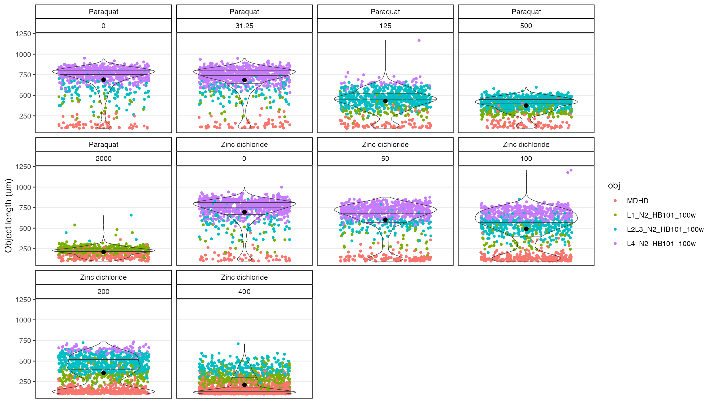
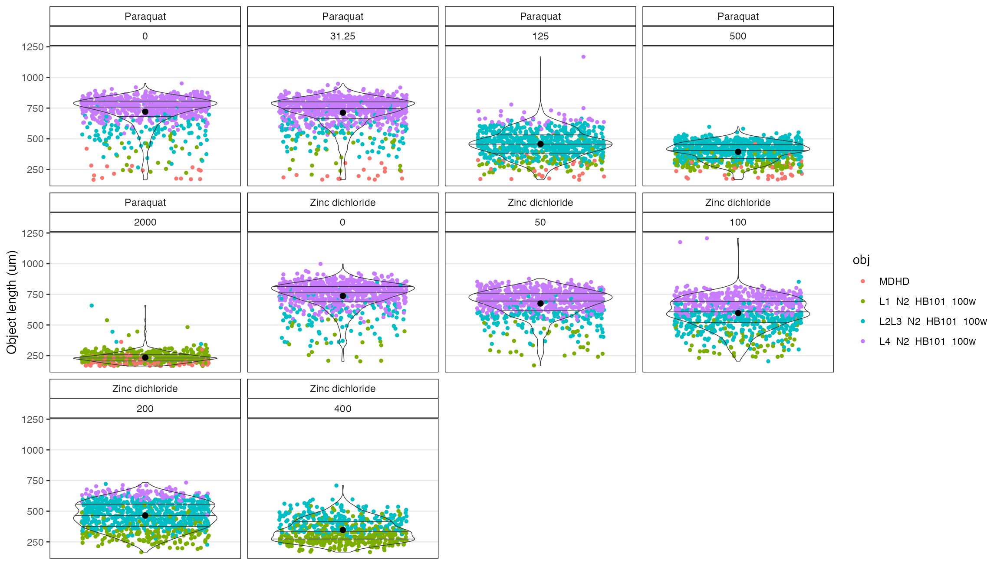
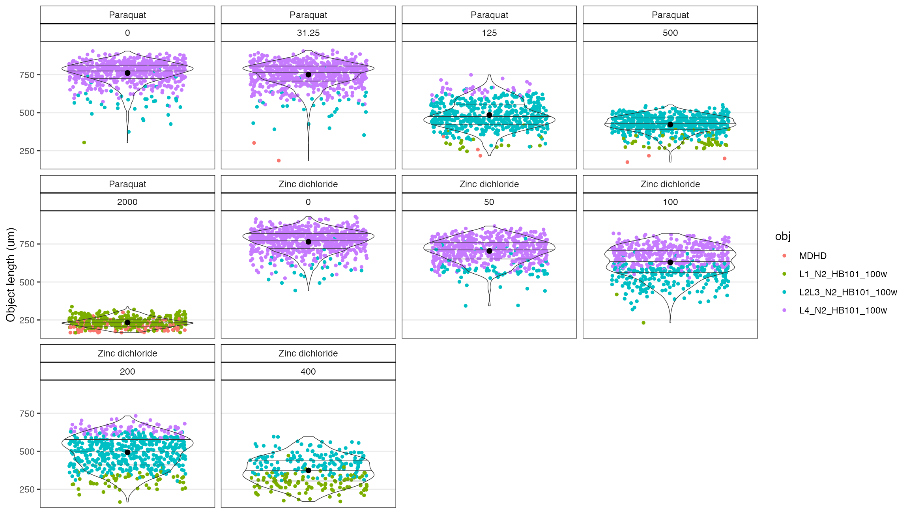
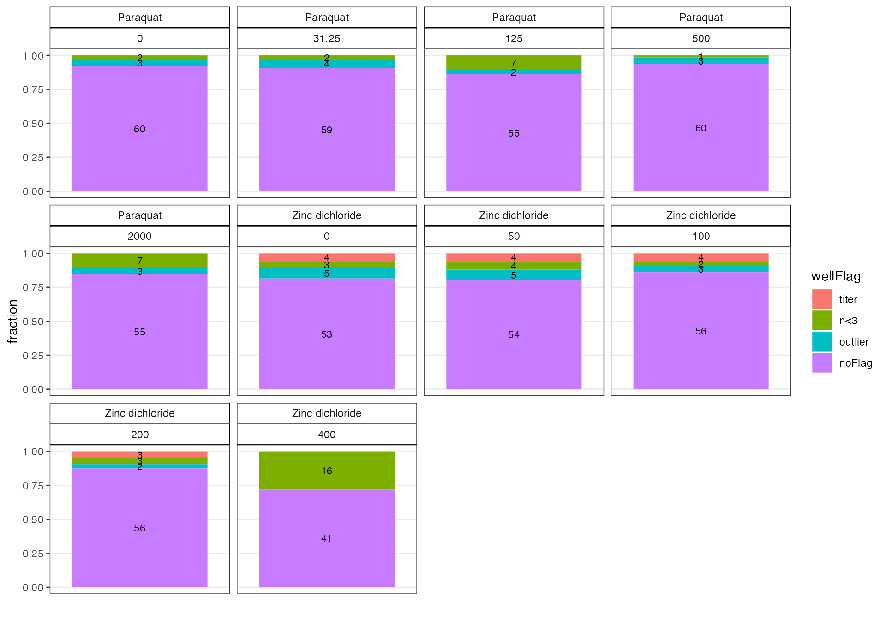

Dose Response Processing
Dose_Response.RmdIntroduction
easyXpress is an R package to read, process, and analyze worm morphology data acquired with the cellprofiler-nf nextflow pipeline.
Below is a detailed walk through applying the easyXpress package to sample dose response data extracted from a toxicant dose response article published in the journal Toxicology.
There are four major steps to processing dose response data that are described in detail below.
1. Load Data - Read in CellProfiler data and select the appropriate models for primary objects.
2. Flag Objects - Flag, check, and filter problematic objects, then summarize object data within wells.
3. Flag Wells - Flag, check, and filter problematic wells, then check experimental design balance after filtering.
4. Finalize Results - Calculate control delta’s and regress confounding effects if needed.
Get example dose response data
This article will use example data that exceeds the typical size for package vignettes, to recreate the workflow below clone the example data from the AndersenLab/eXDR repository.
To clone the example data, users will need to have git installed on their machine. Follow the instructions here if you don’t have git installed or are unsure.
# specify a directory to clone the example data repository to. Here we'll clone
# it to the Desktop. You can use whatever path your like here, just make sure it
# is valid and ends in /
ex.dir <- "~/Desktop/"
# clone the repo using a system command
system(paste0("git clone https://github.com/AndersenLab/eXDR.git ",
ex.dir,
"eXDR"))Load Data
Read in CellProfiler data and select the appropriate models for primary objects.
readXpress
This function reads data output from cellprofiler-nf into R.
readXpress() takes one or more paths to project directories that hold data exported from cellprofiler-nf. Each project directory must have CellProfiler data in a sub-folder named cp_data. Set the rdafile argument to the name of the files you plan to use, one per project. If design = TRUE, a design file will be joined. The design file should be located in a sub-folder of the experimental directory named design. To process dose response data, users must set doseR = TRUE. The other arguments are specified by default but can be adjusted if needed.
For more information regarding project directory structure, see R/easyXpress.
If design = T the readXpress() function returns a list, with the first element named raw_data and the second named design.
# make a vector of project directories cloned in the example data (eXDR)
filedirs <- c(paste0(ex.dir, "eXDR", "/20201210_toxin14A"),
paste0(ex.dir, "eXDR", "/20201217_toxin15A"),
paste0(ex.dir, "eXDR", "/20210311_toxin22A"))
# make a vector of the .RData files cloned in the example data (eXDR)
rdafiles <- c("20201210_toxin14A_Analysis-20231003.RData",
"20201217_toxin15A_Analysis-20231003.RData",
"20210311_toxin22A_Analysis-20231003.RData")
# Read in the data
dr <- easyXpress::readXpress(filedir = filedirs,
rdafile = rdafiles,
design = T,
doseR = T)
#> You set doseR = TRUE. Reading data as a dose response.
#> 3 projects detected:
#> loading data from 3 .rda files:
#> loading ~/Desktop/eXDR/20201210_toxin14A/cp_data/20201210_toxin14A_Analysis-20231003.RData
#> loading ~/Desktop/eXDR/20201217_toxin15A/cp_data/20201217_toxin15A_Analysis-20231003.RData
#> loading ~/Desktop/eXDR/20210311_toxin22A/cp_data/20210311_toxin22A_Analysis-20231003.RData
#> Applying length threshold of 98.811 um.
#> The number of filtered rows for each model are displayed below.
#>
#>
#> |model | filtered| total_rows|
#> |:------------------|--------:|----------:|
#> |L1_N2_HB101_100w | 78| 14091|
#> |L2L3_N2_HB101_100w | 0| 8108|
#> |L4_N2_HB101_100w | 0| 4062|
#> |MDHD | 6945| 29763|
#>
#> Applying missing parent filter.
#> The number of filtered rows for each model are displayed below.
#>
#>
#> |model | filtered| total_rows|
#> |:------------------|--------:|----------:|
#> |L1_N2_HB101_100w | 12| 14091|
#> |L2L3_N2_HB101_100w | 0| 8108|
#> |L4_N2_HB101_100w | 0| 4062|
#> |MDHD | 5| 29763|
#>
#> Primary object attributes detected.
#> Calculating `wo_po_area_frac`.
#> joining design file:
#> ~/Desktop/eXDR/20201210_toxin14A/design/toxin14A_design.csv
#> joining design file:
#> ~/Desktop/eXDR/20201217_toxin15A/design/toxin15A_design.csv
#> joining design file:
#> ~/Desktop/eXDR/20210311_toxin22A/design/toxin22A_design.csv
#> DONE
modelSelection
modelSelection() takes the raw data output from the readXpress() function. It will assign the appropriate CellProfiler model to each primary object in the data frame.
To access the raw data output from the readXpress() function call above, we can use dr$raw_data.
In this example, the data was generated using 4 worm models (MDHD, L1, L2L3, and L4).
# The modelSelection function to select the best model for each primary object
ms <- easyXpress::modelSelection(dr$raw_data)
#> Removing unnecessary '.model.outputs' suffix from model names
#> Found 4 worm models in data.
#> MDHD
#> L1_N2_HB101_100w
#> L2L3_N2_HB101_100w
#> L4_N2_HB101_100wFlag Objects
This step of the project processing will flag problematic objects in the data using various ObjectFlag functions (OF)s. Users can filter flags or retain them after they have been checked.
edgeOF and clusterOF
The edgeOF() function will flag objects close to the edge of the well that are difficult to segment properly.
The clusterOF() function will flag any objects that are found within the same primary object. These ‘clusters’ are often debris or improperly segmented worms.
checkOF
Use the checkOF() function to see how the object flags look across the desired grouping variables, which are specified with ....
c1 <- checkOF(data = cf, drug, concentration_um)
#> 2 ObjectFlags detected in data. They were applied in the following order:
#> edge_ObjectFlag
#> cluster_ObjectFlag
#> The data are summarized by: drug, concentration_um
#> Returning list with elements d (the summary data frame) and p (the summary plot)
# loop at the plot returned
c1$p
The checkOF plot above shows that there are a lot of objects and many clusters at the higher concentrations of Zinc, which suggests a problem at these concentrations.
checkObjs
Use the checkObjs() function to visualize the size distributions of the objects by grouping variables.
# Show just the noFlag data by setting OF = "filter"
c2 <- checkObjs(data = cf, OF = 'filter', drug, concentration_um)
#> 2 ObjectFlags detected in data. They were applied in the following order:
#> edge_ObjectFlag
#> cluster_ObjectFlag
#> The flagged objects will be filtered from the plot.
# look at the plot returned
c2
The diagnostic plot made with the checkObjs() function above shows a strong bimodal distribution in the higher concentrations of zinc that further suggest a problem - probably debris in wells.
checkModels
The checkModels() function is used to see if small objects are debris. This function will produce diagnostic plots across grouping variables. The default settings help decide whether to use a 100um (30px) or 165um (50px) size filter for objects, and whether to use the MDHD worm model or not. Use ?checkModels() for more help if needed.
Before the checkModels() function is used, a variable that specifies the PATH to the processed images for each project is needed. Below, the dplyr package is used to add that variable and make a well label to include in the diagnostic overlays.
# Add variables that describe the PATH to processed images and well labels
cm <- cf %>%
# add img dir var
dplyr::mutate(i.dir =
dplyr::case_when(Metadata_Experiment == "toxin14A" ~
paste0(ex.dir, "eXDR/20201210_toxin14A/processed_images/"),
Metadata_Experiment == "toxin15A" ~
paste0(ex.dir, "eXDR/20201217_toxin15A/processed_images/"),
Metadata_Experiment == "toxin22A" ~
paste0(ex.dir, "eXDR/20210311_toxin22A/processed_images/"),
TRUE ~ NA_character_),
# add well label var
w.lab = paste(drug, strain, concentration_um, sep = "_"))
# use the checkModels function
cm.out <- checkModels(data = cm,
# the grouping vars (...), make a plot for each.
Metadata_Experiment, drug,
proc.img.dir = "i.dir",
well.label = "w.lab",
# save in the repo you cloned
out.dir = paste0(ex.dir, "eXDR/checkModels/out"))
#> Filtering flagged objects from data.
#> 2 ObjectFlags detected in data. They were applied in the following order:
#> edge_ObjectFlag
#> cluster_ObjectFlag
#> Making grob list for 8 overlays
#> Making plot for 8 overlays
#> Saving plot as: ~/Desktop/eXDR/checkModels/out/toxin14A_Paraquat.png
#> Making grob list for 8 overlays
#> Making plot for 8 overlays
#> Saving plot as: ~/Desktop/eXDR/checkModels/out/toxin14A_Zinc dichloride.png
#> Making grob list for 8 overlays
#> Making plot for 8 overlays
#> Saving plot as: ~/Desktop/eXDR/checkModels/out/toxin15A_Zinc dichloride.png
#> Making grob list for 8 overlays
#> Making plot for 8 overlays
#> Saving plot as: ~/Desktop/eXDR/checkModels/out/toxin15A_Paraquat.png
#> Making grob list for 8 overlays
#> Making plot for 8 overlays
#> Saving plot as: ~/Desktop/eXDR/checkModels/out/toxin22A_Paraquat.png
#> Making grob list for 8 overlays
#> Making plot for 8 overlays
#> Saving plot as: ~/Desktop/eXDR/checkModels/out/toxin22A_Zinc dichloride.png
#> DONEcheckModels() output for Zinc dichloride - The MDHD objects are all junk or improperly segemnted worms, objects < 165um are also problematic. These objects should be filtered. The large inset overlaid on the right of this plot is provided to show the objects in more detail, it is not included in the acutal function output.
Based on the diagnostic plots from the checkModels() function, like the example above, the following filters should be applied for each drug:
1. Zinc dichloride - Remove all objects identified by the MDHD model and remove objects with a worm_length_um < 165um.
2. Paraquat - Use the MDHD model for paraquat, but remove out objects with a worm_length_um < 165um. There is no example shown for paraquat, but you can see the plots in your example directory for yourself.
userOF
Use the userOF() function to add the size and model flags to the data as an easyXpress compatible object flag. The variable added can be named anything. In this example, it is named ‘user’ and passed to the userOF function through ....
# add the user variable that will be converted to an object flag
u = cm %>%
dplyr::mutate(user = dplyr::case_when(drug == "Zinc dichloride" &
model == "MDHD" ~ "junk",
drug == "Zinc dichloride" &
worm_length_um < 165 ~ "junk",
drug == "Paraquat" &
worm_length_um < 165 ~ "junk",
TRUE ~ NA_character_))
# Run the userOF function and specify user variable as the flag
uf <- easyXpress::userOF(data = u, user)
#> Converting user into an easyXpress compatible object flag (OF).
# Check the object data again to see if the bimodal distributions are resolved.
checkObjs(data = uf, OF = "filter", drug, concentration_um)
#> 3 ObjectFlags detected in data. They were applied in the following order:
#> edge_ObjectFlag
#> cluster_ObjectFlag
#> user_ObjectFlag
#> The flagged objects will be filtered from the plot.
The diagnostic plot made with the checkObjs() function above shows that the bimodal distribution in the higher concentrations of zinc are improved by adding the user object flag.
classifierOF
The classiferOF() function will flag objects that are likely debris or improperly segmented worms. Currently, this function should only be used on 2X images obtained with the ImageXpress Nano and run through the most recent release of the cellprofiler-nf nextflow pipeline.
Any objects with NA for the data variables used by the classifier will be flagged in the output. These are rare, and often problematic to begin with. Check the function output to see how many objects are being flagged as NA.
# apply the classifierOF function
cl <- classifierOF(data = uf)
#> WARNING: There are 2 rows with NAs in one or more object variables used for the classifier. These rows are flagged as "classErr" in the output.
outlierOF
The outlierOF function will flag objects that have extreme worm_length_um values relative to the other objects in the same well.
The outlierOF function should be applied after all other object flags have been set. This is because the function ignores previously flagged data when searching for outliers in the well.
# apply the outlierOF function
o <- easyXpress::outlierOF(data = cl)
#> Previously flagged objects will not be used when calcualting outliers. This is the recommended approach.
#> 4 ObjectFlags detected in data. They were applied in the following order:
#> edge_ObjectFlag
#> cluster_ObjectFlag
#> user_ObjectFlag
#> classifier_ObjectFlag
#> Flagging outlier objects in each well if worm_length_um is outside the range: median +/- (1.5*IQR)
checkObjs
Use the checkObjs() function again to check the effect of filtering all the object flags. Any strong multi-modal signals that remain in the data should be reviewed to ensure they are the result of biology rather than anomalous features of the well image.
# check objects again, notice how there are 5 ObjectFlags detected now.
checkObjs(data = o, OF = 'filter', drug, concentration_um)
#> 5 ObjectFlags detected in data. They were applied in the following order:
#> edge_ObjectFlag
#> cluster_ObjectFlag
#> user_ObjectFlag
#> classifier_ObjectFlag
#> outlier_ObjectFlag
#> The flagged objects will be filtered from the plot.
The plot above looks much better than it did for the raw data. For example, the bimodal distributions at the high concentrations of Zinc are largely removed.
checkOF
Use the checkOF function again to see how much data is being flagged. If certain conditions in the experiment are heavily flagged it suggests that those data may not be worth keeping.
# check object flags again
co2 <- checkOF(data = o, drug, concentration_um)
#> 5 ObjectFlags detected in data. They were applied in the following order:
#> edge_ObjectFlag
#> cluster_ObjectFlag
#> user_ObjectFlag
#> classifier_ObjectFlag
#> outlier_ObjectFlag
#> The data are summarized by: drug, concentration_um
#> Returning list with elements d (the summary data frame) and p (the summary plot)
# check the plot
co2$p
There are many flagged objects for high concentration of zinc. This is somewhat expected since the wells appear to have a lot of junk in them.
The viewOverlay() function can be used to check these wells and see if the flags are working properly whether the data are worth keeping.
viewOverlay
The viewOverlay() function will annotate the diagnostic images output from cellprofiler-nf with any desired object data. This function is extremely useful for troubleshooting problematic conditions in an experiment. Since this function will build an array of full size images, we recommend sub-setting the data to 48 wells or less to reduce file sizes.
The setOF() function can be used to help annotate object flags. In the example below, the setOF() function is used to collapse the five _ObjectFlag variables to a single variable named objectFlag, which we will use to annotate the overlays. The dplyr package is also used to filter the data to problematic conditions and randomly sample eight wells to pass to the viewOverlay() function.
# IMPORTANT! set the seed to ensure the 8 random wells
# are found in the example images
set.seed(99)
# set the flags and filter data
o2 <- easyXpress::setOF(data = o) %>% # set the flags
dplyr::filter(drug == "Zinc dichloride" &
concentration_um %in% c(200, 400)) %>%
#randomly sample 8 wells
dplyr::filter(well.id %in% sample(well.id, size = 8))
#> 5 ObjectFlags detected in data. They were applied in the following order:
#> edge_ObjectFlag
#> cluster_ObjectFlag
#> user_ObjectFlag
#> classifier_ObjectFlag
#> outlier_ObjectFlag
#> The flagged objects are labelled in the objectFlag variable.
# Use the viewOverlay function
vo1 <- easyXpress::viewOverlay(data = o2,
proc.img.dir = "i.dir",
well.label = "w.lab",
obj.label = "model",
text.anno = "objectFlag",
# save to example dir
file = paste0(ex.dir, "eXDR/viewOverlay/overlay1.png"))
#> Making grob list for 8 overlays
#> Making plot for 8 overlays
#> Saving plot as: ~/Desktop/eXDR/viewOverlay/overlay1.png
viewOverlay() output - The objects are annotated with text showing the objectFlag type. The colors indicate which worm model was selected for the object.
The noFlag objects look ok, but the wells are certainly dirty. Since the flags appear to be working we can retain these wells for now and move on. The full sized version of the overlay is saved to the example data directory that was cloned above.
filterOF
Use the filterOF() function to remove all the flagged objects from the data after the flags have been checked. It is helpful to retain these data as a final processed object data set.
# finalize the object data made with outlierOF function above.
proc.objs <- easyXpress::filterOF(o, rmVars = T)
#> 5 ObjectFlags detected in data. They were applied in the following order:
#> edge_ObjectFlag
#> cluster_ObjectFlag
#> user_ObjectFlag
#> classifier_ObjectFlag
#> outlier_ObjectFlag
summarizeWells
The summarizeWells() function will remove flagged objects, summarize the data within each well and drop all object related variables from the data. These actions prepare the data for the next step, which is to flag wells.
# remove all flags, summarize wells, and drop object vars all in one function
raw.wells <- easyXpress::summarizeWells(data = o)
#> 5 ObjectFlags detected in data. They were applied in the following order:
#> edge_ObjectFlag
#> cluster_ObjectFlag
#> user_ObjectFlag
#> classifier_ObjectFlag
#> outlier_ObjectFlag
#> All flagged objects are filtered prior to summarizing wells.
#> The standard object variables are dropped from the summarized data.Flag Wells
Flag, check, and filter problematic wells, then check the experimental design balance after filtering.
titerWF
Use the titerWF() function to check for improperly titered bleaches. This function will look across the control conditions within grouping variables and flag wells that belong to bleaches with extreme variation in worm numbers or cv.n. Previous analyses suggest that a cv.n > 0.68 is a good threshold. Each set of experiments may require a different threshold, which can be set with the thresh parameter.
The first element of the retruned list tf$d is the flagged well data. A diagnotic plot is returned in the second element of the list tf$p.
# Use the titerWF function within a particular bleach and drug for each strain
tf <- easyXpress::titerWF(data = raw.wells,
Metadata_Experiment, bleach, strain, drug,
doseR = T)
#> You set doseR = TRUE. Expecting controls to be coded as for a dose response.
#> 34 independent bleaches detected. The titer_WellFlag is set in the output data.
#> A diagnostic plot for checking cv.n threshold is returned. See ?titerWF() for more details.
# look at the diagnostic plot
tf$p
The diagnostic plot above shows that there is one bleach with large variation in worm number cv.n > 0.68. All the wells from this bleach will be flagged.
nWF
Use the nWF() function to flag wells with too many or too few objects in them. In this example, the min argument is set to 3, which will flag wells with less than 3 objects. The default value is min = 5, but because the example data is so sparse at the high concentrations of the toxicants the value is set lower.
The function will output a flagged data n$d and a dignostic plot n$p as the first and second elements of a list. The diagnostic plot is faceted by the grouping variables specified with ....
# use the nWF function with the data output from the titerWF function above
n <- easyXpress::nWF(data = tf$d, drug, concentration_um, max = 30, min = 3)
#> The n_WellFlag is set in the output data.
#> A diagnostic plot for checking the object number thresholds (max, min) is returned. See <out>$.p
# Look at the diagnostic plot
n$p
The plot shows the distribution of object counts across the grouping variables with the min and max thresholds ploted as vertical lines.
outlierWF
Use the outlierWF() function to flag wells with extreme values of median_wormlength_um within the grouping variables specified with .... Typically the grouping variables should isolate strains, conditions, and independent bleaches, like in the example below.
# use the outlierWF function to flag outliers within groups
# then use dplyr::mutate to add a variable to indicate independent bleaches.
ow <- easyXpress::outlierWF(data = n$d,
Metadata_Experiment, bleach, drug,
concentration_um, strain) %>%
dplyr::mutate(assay_bleach = paste(Metadata_Experiment, bleach, sep = "_"))
#> Previously flagged wells will not be used when calcualting outliers within the group. This is the recommended approach.
#> 2 WellFlags detected in data. They were applied in the following order:
#> titer_WellFlag
#> n_WellFlag
#> Flagging outlier wells in group if median_wormlength_um is outside the range: median +/- (1.5*IQR)
checkWF
Use the checkWF() function to see how many wells are being flagged across grouping variables specified with ....
# Use the checkWF function
cw1 <- easyXpress::checkWF(data = ow, drug, concentration_um)
#> 3 WellFlags detected in data. They were applied in the following order:
#> titer_WellFlag
#> n_WellFlag
#> outlier_WellFlag
#> The data are summarized by: drug, concentration_um
#> Returning list with elements d (the summary data frame) and p (the summary plot)
# look at the plot
cw1$p
The diagnostic plot above shows that large fraction of wells are being flagged in the highest Zinc concentration. We can use thefilterWF() and checkBalance() functions to see how much data is retained across grouping variables relative to the complete experimental design after the flags are filtered.
filterWF
The filterWF() function will remove all the flagged wells from the data.
# Use the filterWF function and drop the flagging variables afterward
fw <- filterWF(data = ow, rmVars = T)
#> 3 WellFlags detected in data. They were applied in the following order:
#> titer_WellFlag
#> n_WellFlag
#> outlier_WellFlag
checkBalance
Use the checkBalance() function to see the fraction of data retained after the flags are filtered. A balanced design is critical if the effects of confounding variables are to be regressed with the regEff() function. The original design data is sourced from the dr$design object produced by the readXpress() function above. In the example below, the dplyr package is used to add the assay_bleach variable to the design data so that it can be joined with the data output form the outlierWF() function and used as the x-axis in the resulting plot, see code chunk below.
The checkBalance() function returns a list with summary data for making the plot as cb$d and the plot itself as cb$p.
# use the checkBalance function and add assay_bleach var to design
cb <- checkBalance(data = fw, drug, concentration_um,
design = dr$design %>%
dplyr::mutate(assay_bleach =
paste(Metadata_Experiment, bleach)),
x = assay_bleach)
#> Joining, by = c("well.id", "assay_bleach", "drug", "concentration_um")
#> Returning list with elements d (the summary data frame) and p (the summary plot)
# Look at the plot and add a nicer x-axis with ggplot2 package
cb$p +
ggplot2::theme(axis.text.x = ggplot2::element_text(angle = 90, vjust = 0.5)) +
ggplot2::geom_hline(yintercept = 0.75, linetype = 2, color = "red")
The plot above shows that the flagged data fall in particular bleaches. We recommend that the independent bleaches with less than 75 % of data retained be removed. Based on this plot, the bleaches that should be removed for each drug are listed below.
1. Paraquat - The four bleaches toxin14A_2, toxin14A_3, toxin15A_1, and toxin15A_3 should be removed.
2. Zinc dichloride - The five bleaches toxin14A_1, toxin14A_2, toxin15A_1, toxin15A_3, and toxin22A_3 should be removed.
checkEff
The checkEff() function is used to look at the data after the problematic bleaches have been removed. For more help with the checkEff() function use ?checkEff().
# filter the unbalanced bleaches - nearly half the data in this example.
drop <- fw %>%
dplyr::mutate(b.filter =
dplyr::case_when(drug == "Paraquat" &assay_bleach %in%
c("toxin14A_2",
"toxin14A_3",
"toxin15A_1",
"toxin15A_3") ~ "drop",
drug == "Zinc dichloride" & assay_bleach %in%
c("toxin14A_1",
"toxin14A_2",
"toxin15A_1",
"toxin15A_3",
"toxin22A_3") ~ "drop",
TRUE ~ "keep")) %>%
dplyr::filter(b.filter == "keep") %>%
dplyr::select(-b.filter)
# use the checkEff function
ce1 <- easyXpress::checkEff(data = drop,
drug, strain,
x = concentration_um,
y = median_wormlength_um,
fill = assay_bleach,
scales = "free_x")
#> Warning: Using `as.character()` on a quosure is deprecated as of rlang 0.3.0.
#> Please use `as_label()` or `as_name()` instead.
# look at the plot
ce1
The dose effect is as expected for the two strains, increasing concentrations of toxicants reduce the length of animals in the wells. There could be an effect of assay and bleach that can be tested with the regEff() function.
Finalize Results
regEff
The regEff() function will regress out the effect of a confounding variable on a dependent variable within groups specified by .... The function extracts the residuals of a linear model specified as d.var ~ c.var - 1 that remove the estimated influence of the confounding variable c.var on the dependent variable d.var. The function returns a list with four elements. the residuals of the method should be used carefully as it can introduce noise into data awill also produce diagnostic plots and We recommend testing
Before using the regEff() function it is important to have a well balanced design. If the effect of bleach
# Regress the effect of independent bleaches for each drug using regEff()
reg <- easyXpress::regEff(data = drop,
drug,
d.var = median_wormlength_um,
c.var = assay_bleach)
#> The dependent variable `median_wormlength_um` is class numeric. Please ensure this is correct.
#> The confounding variable `assay_bleach` is class character. Please ensure this is correct.
#> The data are grouped by: `drug`
# Look at the regression coefficients in the diagnostic plot p2
reg$p2
The diagnostic plot above shows the point estimates of regression coefficients for each of the indepedent bleaches faceted by drug with standard errors as lines. We recommend further filtering bleaches with extreme effects. Here there are no extreme bleach effects to filter.
delta
The delta() function is used to control for innate differences among strains. This function will calculate the difference in well summary statistics between the experimental condition and the median control condition within a group. It is recommended to group data to independent bleaches for all strains and drugs when processing dose response data.
This is the final step in processing the data. See the help for the delta() function with ?delta().
# use the delta() function
del <- easyXpress::delta(data = reg$d,
assay_bleach, drug, strain, # group with ...
WF = "filter",
doseR = TRUE,
vars = "median_wormlength_um_reg")
#> You set doseR = TRUE. Expecting controls to be coded as for a dose response.
#> No flagged wells detected.
#> The data are grouped by, assay_bleach, drug, strain.
#> The mean control value within groups has been subtracted from the well summary statstics:
#> median_wormlength_um_reg
# check the finalized data
checkEff(data = del, drug, strain, x = concentration_um,
y = median_wormlength_um_reg_delta,
fill = assay_bleach,
scales = "free_x")
The finalized data can be used to fit dose response curves with the `dr